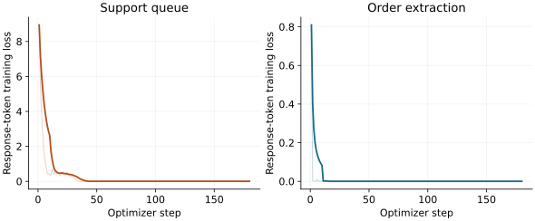

Let’s use compute / model merging
Two fine-tunes, one model
One model learns your support queues. Another learns your order format. Can you combine their weights and keep both behaviors?
A balanced weight average answered all 96 test prompts correctly. So did TIES. A merge weighted 95% toward the support model kept queue routing intact but scored 0/48 on order extraction. Same parents, different tradeoff.
We start with the same Qwen3-0.6B checkpoint twice, train a different LoRA adapter on each copy, and merge the resulting weights. The final model has the same architecture and parameter count as either parent. It does not ask a router which model to call, or combine two answers at inference time.
What survived
| Model | Queue code | Order JSON |
|---|---|---|
| Untouched base | 0/48 | 0/48 |
| Triage parent | 48/48 | 0/48 |
| Extraction parent | 0/48 | 47/48 |
| Balanced linear (50/50) | 48/48 | 48/48 |
| Skewed linear (95/5) | 48/48 | 0/48 |
| TIES (20% density) | 48/48 | 48/48 |
The base’s 0/48 extraction score is a formatting failure. It returned the right fields and values in all 48 cases, but wrapped them in Markdown fences. Removing one outer fence produces 48/48. The official score stays strict; this separate diagnostic does not affect model selection.

These are counts on 48 synthetic test prompts per skill, using held-out wording and identifiers. They are not estimates of real-world support accuracy. All three merge recipes were fixed before the full run.
Two small conventions to learn
The first parent learns three queue codes: RUBY for billing, JADE for login trouble, and AMBER for shipping. Its prompt asks for the queue code without giving the mapping. That makes a behavior learned during fine-tuning visible in the evaluation.
Assign the support queue. Reply with only the queue code.
Ticket 0: charged twice.
RUBYThe second parent adapts order extraction to a strict output contract: a bare JSON record with a product code and integer quantity. Correct values inside Markdown fences do not pass this contract.
Extract the order. Reply with only JSON containing sku (string) and qty (integer).
Order 0: 1 units of SKU AX-00100.
{"sku":"AX-00100","qty":1}Each parent gets 480 generated examples and three epochs of response-only training. Both start from the same pinned base. We train rank-16 LoRA adapters on the attention and feed-forward projections, then fold the updates into full parent weights before merging.

Each adapter trained 10,092,544 parameters. Both changed 392 tensors, produced nonzero gradients, and reproduced their saved-checkpoint responses after reload. The selected 596M-parameter merge also reproduced every test response after saving and reloading.
Training, validation and test use different sentence templates and record IDs. The issue phrases, SKU prefixes and quantity range recur. The 48 triage test rows reuse 12 issue phrases across two templates and different IDs. This measures whether narrow conventions survive a merge; it does not establish generalization to unfamiliar problems, languages or messy customer records.
Average the weights—or resolve the conflicts
A balanced linear merge takes half of each parent’s weights. If each parent is the base plus a learned update, the result is the base plus half of each update. Simple, but an update that worked at full strength may stop working when halved.
balanced = base + 0.50 × triage_update + 0.50 × extraction_update
skewed = base + 0.95 × triage_update + 0.05 × extraction_updateThe skewed recipe deliberately gives extraction very little weight. It tests a tradeoff, rather than treating every merge as an improvement.
TIES works with changes relative to the common base. It trims small changes, elects a sign where updates disagree, and combines the changes that agree with that sign. Our preset keeps the largest 20% of entries in each task delta and gives the two parents equal weight. We use mergekit for all three recipes.
The merge calculations use FP32. Evaluation and the released model use BF16. Averaging full parent weights also avoids confusing a weight merge with separately averaging the two low-rank adapter matrices, which is a different operation.
Here, TIES did not improve on the simple average: both reached 24/24 per skill on validation and 48/48 per skill on test. Our predeclared tie-break keeps the first recipe, so the released model is the balanced linear merge. That is a result for this small experiment, not a ranking of merging algorithms.
The skewed merge’s extraction failures are not just Markdown fences. Asked to extract four pieces of BQ-20129, it answered AMBER;4 pieces. The triage parent gave the same answer. The custom queue vocabulary had leaked into an unrelated output task.
The extraction parent made one value error: it returned quantity 3 instead of 34 for SKU DP-20139. Both balanced linear and TIES returned the correct record. One repaired example is useful to inspect, but is not enough to claim a general accuracy improvement.
Read the actual answers
Choose a test prompt to compare the base, both parents and all three merges. These are saved responses from the run, not a live endpoint.
Loading recorded responses…
Prompt
Expected answer
Try the experiment
The job generates its data, downloads the base, trains both adapters, evaluates the parents, runs mergekit, and saves the selected model. Start with the sample preset to check the whole pipeline:
curl -fsSL https://raw.githubusercontent.com/theoriclabs/letsusecompute/main/posts/merge-models/train.py -o train.py
compute run train.py::train --gpu cheap --dry-run
compute run train.py::train --gpu cheap --timeout 1800 \
--args '{"sample": true}' --waitThe dry-run only checks the upload plan. Review the real quote before confirming spend. If the automatic selector cannot estimate this workload, check compute gpu list and choose an explicit NVIDIA GPU from the current catalog.
Omit --args for the full experiment. To publish the selected merge, store a Hugging Face write token with compute secrets set hf and use train.py::train_and_push. That entrypoint explicitly injects the secret; storing it alone does not put it on the machine.
The complete experiment cost $0.42. The full A100 run cost $0.20; samples and failed attempts account for the other $0.22. Training, merging and evaluation took about 157 seconds in the full run, before model publication and artifact upload. The bill also includes machine setup and time spent saving outputs. Every machine was terminated.
After the machine is gone, retrieve the saved model with compute artifacts list and compute artifacts get. The reproduction notes contain the exact configuration, scoring rules and commands; the agent instructions cover the same workflow.
What this tells us
For these two learned conventions, a simple average was enough. It kept the queue mapping and restored the JSON-only order behavior that the fully trained triage parent had lost. Giving that parent nearly all the weight lost the second behavior again.
We choose the released merge using validation results: maximize the worse skill’s accuracy, then the sum. The final test set is used for reporting, not selection. This is one training seed and three preset recipes. More tasks, different wording and different seeds could change the outcome.
A merge needs the same checks as a fine-tune: compare against the untouched base, measure each parent on every skill, keep a separate selection set, and inspect the outputs that fail. A single pooled score can hide the behavior you lost.
Code and experiment evidence · Base model · Download the merged model